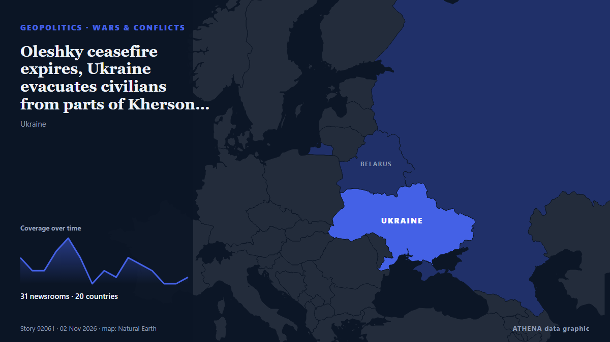

Oleshky ceasefire expires, Ukraine evacuates civilians from parts of Kherson region

Nov 1 - Ukraine's military said it evacuated 167 people from threatened areas of southern Kherson region on Sunday as a temporary local ceasefire expired — two days after buses carried residents out… from The Straits Times
Reported independently by 31 outlets in 20 countries since 1 Nov, first by eNCA; coverage is fading. ATHENA rates the risk elevated (4.4/10), driven mainly by the severity of the harm described and its geographic and sector reach. Confidence is 91% (high), with 31 independent outlets corroborating it and an average source reliability of 77%. Newsrooms by country: United Kingdom (6), Ukraine (4), Singapore (3). Coverage: 1 Nov to 2 Nov, 29 hours.
Why it matters: Russia's full-scale invasion of Ukraine began in February 2022. This tracker follows the fighting, strikes on infrastructure and the diplomacy around the war, as covered by newsrooms around the world.
What changed: 29 new reports from 26 newsrooms in the 24 hours to 2 Nov.
First reported as: Longest truce of Ukraine war, in Kherson region, set to end
At a glance
Selected, scored and written by ATHENA's published methodology. No editor intervenes in individual events. How this is produced ›
| 01 Nov 12:39 UTC | 4 |
|---|---|
| 01 Nov 14:39 UTC | 2 |
| 01 Nov 16:39 UTC | 2 |
| 01 Nov 18:39 UTC | 5 |
| 01 Nov 20:39 UTC | 7 |
| 01 Nov 22:39 UTC | 4 |
| 02 Nov 00:39 UTC | 0 |
| 02 Nov 02:39 UTC | 2 |
| 02 Nov 04:39 UTC | 1 |
| 02 Nov 06:39 UTC | 4 |
| 02 Nov 08:39 UTC | 3 |
| 02 Nov 10:39 UTC | 2 |
| 02 Nov 12:39 UTC | 0 |
| 02 Nov 14:39 UTC | 0 |
| 02 Nov 16:39 UTC | 1 |
| 01 Nov 14:36 UTC | 2.9 |
|---|---|
| 01 Nov 14:43 UTC | 3.7 |
| 02 Nov 03:29 UTC | 4.3 |
| 02 Nov 17:33 UTC | 4.4 |
Why these numbers
Importance
Risk
Confidence
The reporting — who reported it, and when
headline as published · opens the original- eNCA · South AfricaLongest truce of Ukraine war, in Kherson region, set to end
- France 24 English · FranceCeasefire in Ukraine's Kherson region ends after Russia refuses extension
- The Canadian Press (via CityNews) · CanadaCivilians in Ukraine’s Kherson prepare for the return of war as localized ceasefire ends
- ABC News (International) · United StatesCivilians in Ukraine's Kherson prepare for the return of war as localized ceasefire ends
- Belfast Telegraph · United KingdomCivilians in Kherson prepare for return of war as localised ceasefire ends
- The Irish News (Belfast) · United KingdomCivilians in Kherson prepare for return of war as localised ceasefire ends
- Ukrainska Pravda (English) · UkraineUkrainian forces also evacuated civilians from right bank of Kherson Oblast during Oleshky mission – photos
- Ukrinform (English) · UkraineGeneral Staff: Ukrainian troops evacuated 167 civilians from Kherson region during ceasefire
- The Straits Times · SingaporeOleshky ceasefire expires, Ukraine evacuates civilians from parts of Kherson region
- APA (English) · AzerbaijanUkraine evacuates civilians from parts of Kherson region as expiry of Oleshky ceasefire nears
- BBC News · United KingdomRussian strikes cut power to thousands in Ukraine as Kherson ceasefire ends
- Daily Maverick · South AfricaUkraine evacuates civilians from parts of Kherson region as expiry of Oleshky ceasefire nears
- Anadolu Agency (English) · TurkeyOleshky ceasefire between Russia, Ukraine ends with no violations reported
- MyJoyOnline · GhanaRussian strikes cut power to thousands in Ukraine as Kherson ceasefire to end
- TRT World · TurkeyMulti-day ceasefire in Ukraine's Oleshky concludes without violations
- Arab News · Saudi ArabiaUkraine evacuates civilians from parts of Kherson region as expiry of Oleshky ceasefire nears
- The Straits Times · SingaporeLongest truce of Ukraine war ends in Kherson
- CNA (Channel NewsAsia) · SingaporeUkraine evacuates civilians from parts of Kherson region as expiry of Oleshky ceasefire nears
- Ukrainska Pravda (English) · UkraineUkrainian human rights commissioner: Ceasefire for operation in Oleshky has ended, further humanitarian efforts are being considered
- Al Jazeera English · QatarKherson braces for return of war as localised Russia-Ukraine truce ends
- Free Malaysia Today · MalaysiaLongest truce of Ukraine war ends in Kherson
- Kyiv Independent · UkraineUkrainian forces evacuate civilians around Kherson Oblast during Oleshky ceasefire
- New Straits Times · MalaysiaLongest truce of Ukraine war ends in Kherson
- The Korea Times · South KoreaCivilians in Ukraine's Kherson prepare for return of war as localized ceasefire ends
- NDTV · IndiaLongest Ukraine War Ceasefire Ends In Kherson. It Lasted 6 Days
- Arab News · Saudi ArabiaCivilians in Ukraine’s Kherson prepare for the return of war as localized ceasefire ends
- Cyprus Mail · CyprusOleshky ceasefire expires, Ukraine evacuates civilians from parts of Kherson region
- The Citizen (Tanzania) · TanzaniaOleshky ceasefire expires, Ukraine evacuates civilians from parts of Kherson region
- The Irish News (Belfast) · United KingdomCivilians in Kherson prepare for return of war as localised ceasefire ends
- Belfast Telegraph · United KingdomCivilians in Kherson prepare for return of war as localised ceasefire ends
- DW English · GermanyUkraine: Six-day localized ceasefire in Oleshky comes to end
- Ada Derana · Sri LankaRussian strikes cut power to thousands in Ukraine as Kherson ceasefire ends
- NPR World · United StatesHundreds evacuate city during temporary ceasefire between Russia and Ukraine
- Asharq Al-Awsat (English) · Saudi ArabiaRussia Resumes Attacks on Ukraine's Kherson Region after Local Truce Ends
- France 24 English · FranceEmotional reunions as residents flee Ukraine’s Oleshky during truce
- To Vima (English) · GreeceKyiv Says Moscow Used Oleshky Truce To Reinforce Its Positions
- BBC News · United KingdomFighting returns to Kherson region after longest Ukraine war ceasefire